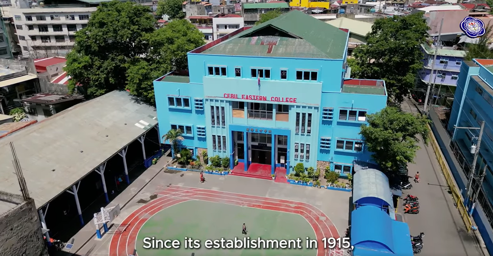

Fun with Symbol Entities ☺
Life is short don't make it Shorter & Late is better than Absent © 2025.
Discover, Learn & Grow with Us!
I’m John Lloyd Cutamora, a 1st-year college student passionate about coding and eager to make a mark in the IT industry. While I’m still building my experience with various coding languages, I’m highly motivated and willing to put in the work to learn and grow. My goal is to contribute to the tech field by developing innovative solutions and improving my skills every day.
Click on the areas of interest!
Life is short don't make it Shorter & Late is better than Absent © 2025.